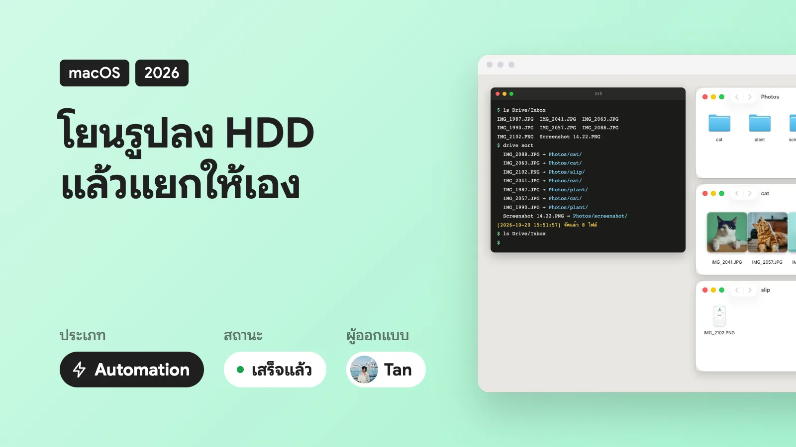
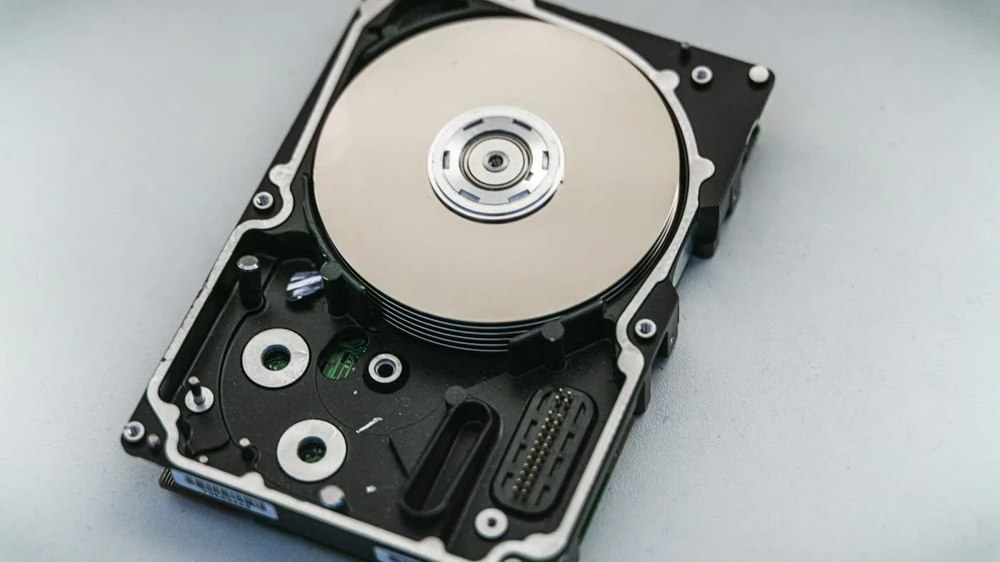
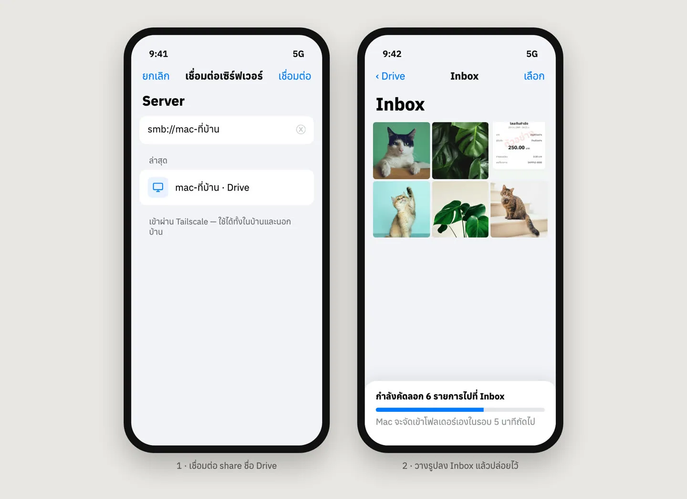
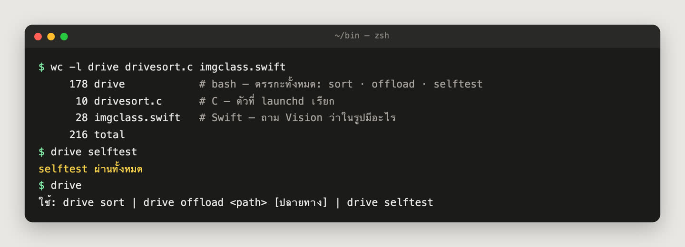
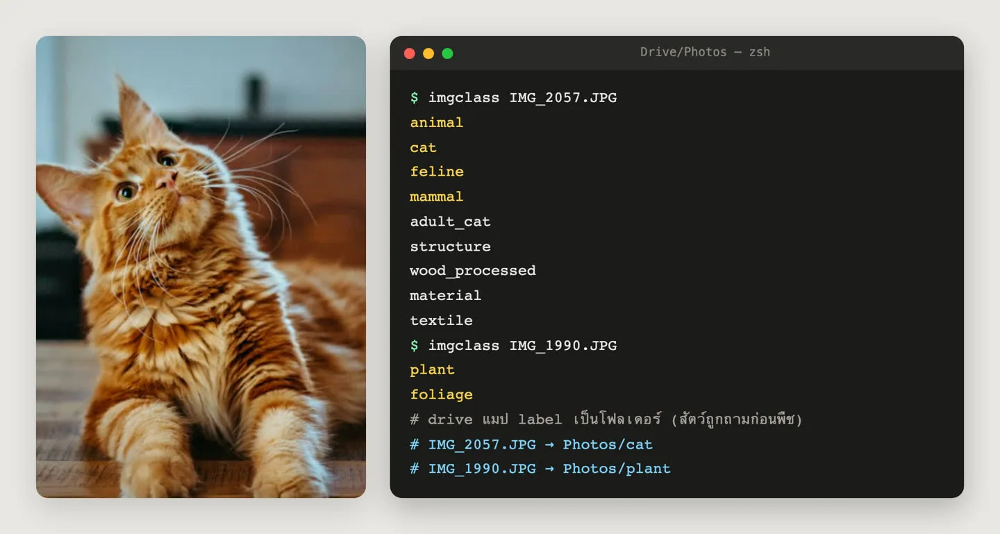
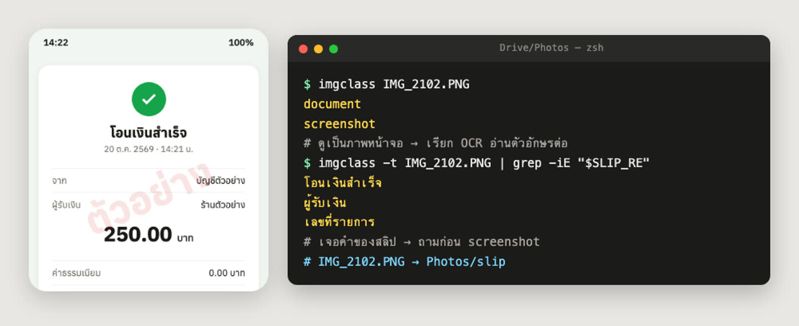
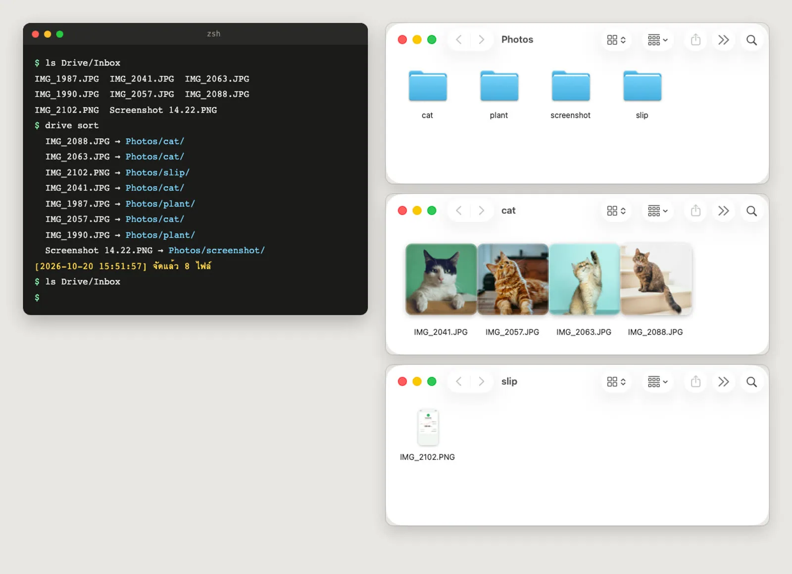

Drive Auto-Sort
ทุกวันนี้มันทำงานเงียบ ๆ ทุก 5 นาทีโดยไม่มีหน้าจอ ไม่มีการแจ้งเตือน และไม่มีอะไรให้กด — โยนรูปลง Inbox แล้วเดินไปทำอย่างอื่น กลับมาอีกทีของก็อยู่ในโฟลเดอร์ของมันแล้ว

โยนรูปลงโฟลเดอร์ Inbox โฟลเดอร์เดียว แล้วเครื่องแยกให้เองว่าอันไหนคือสลิปโอนเงิน อันไหนคือสกรีนช็อต อันไหนคือแมว — ด้วย Vision framework ที่ติดมากับ macOS อยู่แล้ว — และรูปเดินทางจาก iPhone มาถึงฮาร์ดดิสก์ที่บ้านเองผ่าน Tailscale โดยไม่ต้องเสียบสาย ไม่ต้องเปิดพอร์ตออกอินเทอร์เน็ต และไม่มีค่าบริการรายเดือน
Pain point ที่แท้จริงไม่ใช่ค่าเช่าพื้นที่
โจทย์ตั้งต้นคือ “ไม่อยากจ่าย iCloud” แต่พอถามต่ออีกชั้นว่าจ่ายไปเพื่ออะไร คำตอบมันเปลี่ยนรูปปัญหาทั้งหมด

ผมมีฮาร์ดดิสก์ที่ใหญ่พอและจ่ายจบไปแล้วเสียบอยู่กับ Mac แต่มันเป็นแค่ ที่ทิ้งไฟล์ ไม่ใช่ คลังที่หาของเจอ — สิ่งที่ iCloud ขายจริง ๆ ไม่ใช่กิกะไบต์ แต่คือการที่ของเข้าที่ของมันเองโดยผมไม่ต้องทำอะไร
พอนิยามปัญหาใหม่แบบนี้ ทางแก้ที่ดูสมเหตุสมผลที่สุดตอนแรก — คือ “ก็ลากไฟล์มาลง HDD สิ” — กลายเป็นทางที่แย่กว่าเดิม เพราะมันย้ายต้นทุนจากค่าเช่ารายเดือน ไปเป็นแรงคนที่ต้องจ่ายทุกครั้งที่มีไฟล์เข้า
ค่าที่แท้จริงคือค่าแรงจัดไฟล์ ไม่ใช่ค่าพื้นที่
ค่าบริการรายเดือนจ่ายครั้งเดียวจบต่อรอบ แต่การจัดไฟล์เองต้องจ่ายด้วยความตั้งใจทุกครั้งที่มีของเข้า และเป็นต้นทุนที่ไม่มีใครจ่ายต่อเนื่องได้จริง
โฟลเดอร์ที่ไม่มีคนจัด จะกลายเป็นที่ที่ไม่มีใครเปิด
ย้ายของขึ้น HDD เฉย ๆ โดยไม่มีตัวจัด ผลลัพธ์คือกองไฟล์ก้อนเดียวหลายพันชิ้นที่ค้นไม่เจอ สุดท้ายไม่กล้าลบและไม่เคยเปิด แย่กว่าตอนอยู่ในมือถือด้วยซ้ำ
นามสกุลไฟล์บอกได้แค่ว่ามันเป็นรูป ไม่ได้บอกว่ารูปอะไร
ตัวจัดไฟล์เดิมแยกได้แค่ .jpg เข้า Photos และ .pdf เข้า Documents ซึ่งพอสำหรับเอกสาร แต่ไม่พอสำหรับรูป เพราะรูปหลายพันใบในโฟลเดอร์เดียวก็ยังหาสลิปเดือนที่แล้วไม่เจออยู่ดี
ทางแก้ที่มีอยู่ทุกเจ้า แลกด้วยการอัปรูปส่วนตัวขึ้นคลาวด์
บริการที่ค้นรูปเก่งจริงทำงานบนเซิร์ฟเวอร์ของเจ้าของบริการทั้งหมด แปลว่าสลิปการเงินและรูปในบ้านต้องออกจากเครื่องไปก่อน จึงจะได้ความสะดวกกลับมา
สี่ทางที่ชั่งจริง ก่อนตัดสินใจเขียนเอง
เกณฑ์มี 3 ข้อ — ต้องแยกรูปตามเนื้อในรูปได้ · ไม่มีค่าใช้จ่ายต่อเนื่อง · รูปไม่ออกจากเครื่อง
| ทางเลือก | แยกตามเนื้อในรูป | ค่าใช้จ่าย | เหตุที่ตก / รับ |
|---|---|---|---|
| iCloud+ | ค้นได้ แต่ไม่จัดโฟลเดอร์ให้ | รายเดือน ตลอดไป | รูปอยู่บนเซิร์ฟเวอร์ Apple · จ่ายแล้วก็ยังไม่ได้โครงโฟลเดอร์ที่เอาไปใช้ต่อได้ และเป็นโจทย์ตั้งต้นที่อยากเลี่ยง |
| Google Photos | ค้นเก่งที่สุดในกลุ่ม | รายเดือนเมื่อเกินโควตา | ต้องอัปสลิปการเงินและรูปส่วนตัวทั้งหมดขึ้นเซิร์ฟเวอร์ Google — ราคาที่ไม่อยากจ่ายในความหมายอื่น |
| NAS + แอปจัดรูป | ได้ ถ้าลงปลั๊กอินเพิ่ม | ค่าเครื่อง + ค่าดูแล | อยู่ในบ้านก็จริง แต่ต้องซื้อฮาร์ดแวร์ใหม่ทั้งชุด เพื่อแก้ปัญหาที่ HDD เดิมกับ Mac เดิมทำได้อยู่แล้ว |
| ต่อยอดตัวจัดไฟล์เดิม เลือก | ได้ ด้วย Vision ที่ติดมากับ macOS | ไม่มี | รูปอยู่บน HDD ที่มีอยู่ · มีตัวจัดตามนามสกุลทำงานอยู่แล้ว เหลือแค่ต่ออีกชั้นให้ดูเนื้อในรูป |
Vision framework ติดมากับ macOS อยู่แล้ว — จำแนกภาพได้ 1,303 ชนิด และอ่านตัวอักษรได้ 30 ภาษารวมภาษาไทย ทำงานบนเครื่อง ไม่ต้องต่อเน็ต ไม่ต้องมี API key ไม่มีค่าเรียกต่อครั้ง ของที่จำเป็นทั้งหมดจึงมีอยู่ในเครื่องตั้งแต่ต้น เหลือแค่ต่อสายให้ถูก
จะแทน iCloud ได้จริง รูปต้องเดินทางจากมือถือมาถึงฮาร์ดดิสก์เองได้
ตัวจัดไฟล์จะฉลาดแค่ไหนก็ไม่มีความหมาย ถ้าคนต้องเสียบสาย iPhone เข้าคอมก่อนทุกครั้ง — ชิ้นส่วนที่ทำให้ทั้งระบบใช้แทนคลาวด์ได้จริง อยู่ตรงเส้นทางนี้

เสียบสายโอนเองทุกครั้ง
เป็น workflow เดิมที่ทำให้ไม่มีใครทำจริงตั้งแต่แรก ถ้าต้องรอกลับถึงบ้านแล้วหาสาย รูปก็จะกองอยู่ในมือถือต่อไปเหมือนเดิม
Forward พอร์ต 445 ออกอินเทอร์เน็ตที่เราเตอร์
SMB เป็นหนึ่งในพอร์ตที่ถูกสแกนหนักที่สุดบนอินเทอร์เน็ต การเปิดมันตรง ๆ เพื่อความสะดวกส่วนตัว คือการแลกที่ไม่คุ้มเลย และยังต้องมี dynamic DNS คอยตามเมื่อ IP บ้านเปลี่ยน
ตั้ง VPN เข้าบ้านเอง
ได้ผลลัพธ์ถูกทาง แต่ต้องแตะตั้งค่าเราเตอร์ เปิดพอร์ต และดูแลกุญแจ/ใบรับรองเอง เป็นงานดูแลระบบที่ต้องจ่ายต่อเนื่อง เพื่อแก้ปัญหาโอนรูป
mesh VPN บน WireGuard ที่ทำให้ iPhone กับ Mac คุยกันตรง ๆ ผ่าน IP ส่วนตัวของ tailnet ซึ่งคงที่ตลอด ไม่ว่าเครื่องจะอยู่เครือข่ายไหน — ไม่ต้อง forward พอร์ต ไม่ต้องมี dynamic DNS ไม่ต้องแตะเราเตอร์สักบรรทัด และไม่มีอะไรถูกเปิดออกสู่อินเทอร์เน็ตสาธารณะ
- พอร์ต 445 ไม่เคยโผล่บนอินเทอร์เน็ตสาธารณะ — มันฟังอยู่บน tailnet เท่านั้น ต่างจากการ forward พอร์ตที่เราเตอร์โดยสิ้นเชิง
- ปิด guest access — ต้องล็อกอินด้วยบัญชีของเครื่อง การอยู่ใน tailnet อย่างเดียวยังเข้าไม่ได้
- ไม่ได้ตั้ง
tailscale serveหรือ funnel ไว้เลย — ไม่มีบริการไหนถูกเปิดออกนอก tailnet แม้แต่ตัวเดียว - HDD ไม่ได้เสียบ = share หายไปเฉย ๆ — ตัวจัดไฟล์ก็จบเงียบตามหลักเดิม ไม่มี error ให้ต้องมาไล่ดู
สามไฟล์ แต่ละไฟล์มีเหตุผลที่ต้องแยกออกมา
ไม่ได้แยกเพราะอยากให้ดูเป็นระบบ แต่เพราะข้อจำกัดของ macOS บังคับให้แยก

wc -l และ drive selftestdrive — bash
ตรรกะทั้งหมดอยู่ที่นี่ · sort จัดไฟล์ · offload ย้ายของขึ้น HDD แล้วทิ้ง symlink ไว้ที่เดิม · selftest ตรวจตัวเองก่อนแก้
drivesort — C, 8 บรรทัด
macOS ไม่ยอมผูก Full Disk Access กับ shell script จึงต้องมี binary จริงไว้รับสิทธิ์ ให้เฉพาะตัวนี้เข้าถึงดิสก์ได้ แทนการเปิดสิทธิ์ให้ /bin/bash ทั้งระบบ
imgclass — Swift
bash เรียก framework ของระบบเองไม่ได้ ตัวนี้ทำหน้าที่เดียวคือเปิด Vision แล้วพิมพ์ผลดิบออกมา — label ของสิ่งที่อยู่ในรูป หรือตัวอักษรที่อ่านได้
วิธีทำงาน — 5 จังหวะ
จากไฟล์ที่เพิ่งตกลง Inbox ถึงโฟลเดอร์ปลายทาง โดยไม่มีใครกดอะไรเลย

imgclass (Vision บนเครื่อง ไม่ต่อเน็ต) — label เรียงจากมั่นใจมากไปน้อย แล้ว drive แมปเป็นชื่อโฟลเดอร์ · รูปแมว: Amber Kipp / Unsplashปลุกทุก 5 นาที
ไม่เฝ้าโฟลเดอร์แบบ real-time เพราะงานนี้ไม่ต้องการความเร็วระดับวินาที และการปลุกเป็นรอบถูกกว่าการค้าง process ไว้ตลอดเวลา
หยิบเฉพาะไฟล์ที่นิ่งเกิน 1 นาที
ข้ามไฟล์ที่เพิ่งถูกแตะ กันย้ายไฟล์ที่มือถือกำลังอัปยังไม่เสร็จ แล้วได้ไฟล์ครึ่ง ๆ กลาง ๆ ไปอยู่ผิดที่
แยกชั้นแรกตามนามสกุล
Photos · Videos · Documents · Design — นามสกุลที่ไม่รู้จักไม่เดา ปล่อยค้างไว้ใน Inbox ให้คนตัดสิน
เฉพาะรูป ส่งเข้า Vision
ได้ label ของสิ่งที่อยู่ในรูปเรียงตามความมั่นใจ · ถ้าดูแล้วเป็นภาพหน้าจอ จึงค่อยเรียก OCR อ่านตัวอักษรต่อ เพราะ OCR ช้ากว่าหลายเท่า
ลงโฟลเดอร์ย่อย หรือไม่ลงเลย
ไม่มั่นใจ = ไม่เดา ค้างไว้ที่ Photos/ ให้คนตัดสิน หลักเดียวกับนามสกุลที่ไม่รู้จัก
ลำดับการเช็คคือตัวตัดสินผลลัพธ์ ไม่ใช่ความแม่นของโมเดล
รูปหนึ่งใบติดหลาย label พร้อมกันเสมอ สิ่งที่กำหนดว่ามันจะไปโฟลเดอร์ไหน คือใครถูกถามก่อน

food มาให้ทุกจานอยู่แล้ว ไม่ต้องไล่ชื่อเมนูทีละอัน — และถูกถามก่อนพืชด้วยเหตุผลเดียวกับสัตว์ จานที่มีใบไม้ประดับก็ยังเป็นรูปอาหารPhotos/ ให้คนตัดสินรูปแมวดำยืนหน้ากอต้นไม้ Vision คืน animal mammal cat feline พร้อมกัน และเพราะแมวถูกถามก่อนพืช ไฟล์จึงลง Photos/cat ไม่ใช่ Photos/plant
สามเรื่องที่รู้ก็ต่อเมื่อเอาไปวัดกับไฟล์จริง
ทุกข้อคือสมมติฐานที่ฟังดูสมเหตุสมผลตอนคิด แล้วผิดตอนวัด
คิดว่า Vision จะรู้จักสลิป เพราะในรายการมี label ชื่อ receipt อยู่
เอาสลิปจริง 60 ใบไปทดสอบ ปรากฏว่า label receipt ไม่เคยถูกคืนมาเลยสักครั้ง — 59 ใบได้ document กับ screenshot เหมือนกันหมด เพราะสลิปของจริงไม่ใช่ใบเสร็จกระดาษที่ถ่ายด้วยกล้อง แต่เป็นภาพแคปหน้าจอจากแอปธนาคาร ซึ่งหน้าตาเหมือนสกรีนช็อตทุกประการ
รหัสอ้างอิง พร้อมเพย์ ยอดชำระ และเพราะ OCR ช้ากว่าการจำแนกภาพมาก จึงเรียกเฉพาะรูปที่ถูกตีว่าเป็นภาพหน้าจอเท่านั้นคำว่า “ค่าธรรมเนียม” ดูดใบยืนยันซื้อหุ้นเข้ามาเป็นสลิป
ตอนตั้งรายการคำที่บ่งบอกว่าเป็นสลิป ใส่ ค่าธรรมเนียม ไปด้วยเพราะสลิปโอนเงินมักมีคำนี้ พอเอาไปวัดกับสกรีนช็อตทั่วไป 25 รูป มีใบยืนยันการซื้อหุ้น 3 ใบถูกดึงมาเป็นสลิป เพราะมันมีคำว่าค่าธรรมเนียมเหมือนกัน
ใน 1,303 label มีคำที่หน้าตาเหมือนกันแต่คนละเรื่อง
รายการของ Vision มีทั้ง hotdog prairie_dog eggplant cauliflower sunflower_seeds bobcat goldfish jellyfish ถ้าจับคู่แบบหาคำย่อย รูปฮอทดอกจะกลายเป็นรูปหมา มะเขือม่วงจะกลายเป็นต้นไม้ และตู้ปลาจะกลายเป็นมื้อเย็น
วัดกับไฟล์ของตัวเอง ไม่ใช่กับชุดข้อมูลตัวอย่าง
โฟลเดอร์ที่เคยจัดด้วยมือไว้แล้ว กลายเป็นชุดเฉลยที่ใช้ตรวจคำตอบได้ฟรี

drive sort ย้ายเข้าโฟลเดอร์ย่อยครบ Inbox ว่าง — หน้าต่าง Finder คือผลลัพธ์บนดิสก์จริง| ชุดทดสอบ | จำนวน | ผล |
|---|---|---|
| โฟลเดอร์ slip ที่จัดด้วยมือไว้ | 67 รูป | ตีเป็น slip 53 · screenshot 8 · ไม่แยก 1 — เปิดดู 8 ใบที่หลุดแล้วพบว่าเป็นแชท คลิป TikTok และลายเซ็นที่ปนอยู่ในโฟลเดอร์จริง ๆ ไม่ใช่สลิป |
| โฟลเดอร์ screenshot ที่จัดด้วยมือไว้ | 5 รูป | ถูกทั้งหมด 5 จาก 5 |
| สกรีนช็อตทั่วไปนอกไดรฟ์ | 25 รูป | ไม่มีใบไหนถูกตีเป็นสลิปผิด |
| Inbox จริง ตอนรันของจริง | 18 ไฟล์ | ตรงกับที่ทดลองไว้ก่อนย้ายทั้ง 18 ไฟล์ — cat 8 · slip 8 · plant 1 · screenshot 1 |
เครื่องมือจัดไฟล์ที่แยกผิดบ้างยังพอรับได้ เพราะเปิดโฟลเดอร์ก็เจอ แต่เครื่องมือที่ เอาของไปซ่อนผิดที่ แย่กว่าไม่มีเครื่องมือเลย หลักที่ยึดตลอดทั้งงานจึงเหลือข้อเดียว คือไม่แน่ใจแล้วไม่ต้องเดา
ขอบเขตที่ตั้งใจไม่ทำ
สิ่งที่ตัดออกมีผลกับความน่าเชื่อถือของเครื่องมือ มากกว่าสิ่งที่ใส่เข้าไป
- ไม่เดาเมื่อไม่มั่นใจ — ไฟล์ค้างอยู่ที่เดิม ดีกว่าถูกย้ายไปที่ที่เจ้าของไม่รู้ว่าอยู่ไหน
- ไม่เรียกบริการภายนอกสักตัว — สลิปการเงินและรูปส่วนตัวไม่ควรถูกอัปไปที่ไหน เพื่อแลกกับการจัดโฟลเดอร์
- ไม่เขียนตรรกะการแยกลงใน Swift — ตัวจำแนกพิมพ์ผลดิบออกมาเฉย ๆ ส่วนการแมปเป็นชื่อโฟลเดอร์อยู่ในสคริปต์ เพิ่มหมวดใหม่จึงไม่ต้องคอมไพล์ใหม่
- ไม่ถือว่า HDD ไม่ได้เสียบเป็นความผิดพลาด — งานจบเงียบ ๆ แล้วรอบหน้าค่อยมาใหม่ ไม่ต้องมีข้อความเตือนทุก 5 นาที
- ไม่แตะไฟล์เก่าที่จัดไว้แล้ว — ทำงานเฉพาะของใหม่ที่เข้า Inbox การไล่จัดย้อนหลังเป็นการตัดสินใจแยกที่เจ้าของควรสั่งเอง